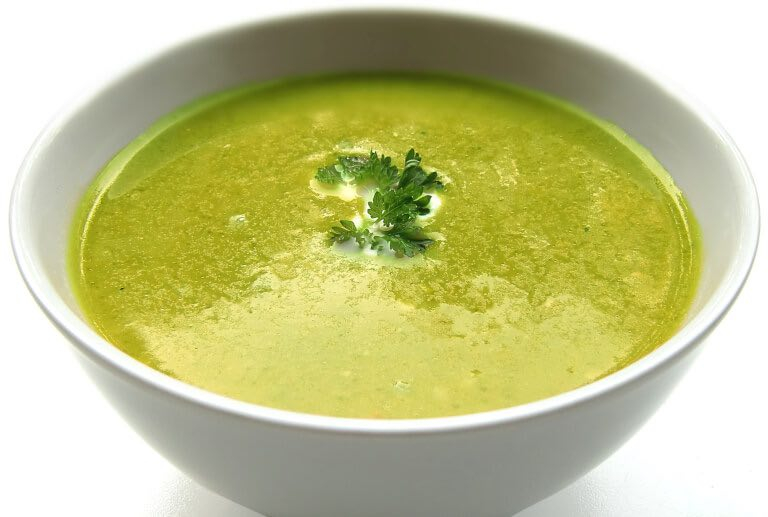

Soup
=============
### Ingredients
* 2 potatoes
* 2 onions
* 2 cloves of garlic
* olive oil
* 400 ml organic stock
* 3 bunches of watercress
### Instructions
* Peel and roughly chop the potatoes, onions and garlic.
* In a large saucepan, heat a little olive oil, then sauté the potato, onion and garlic until the onions are translucent.
* Add the stock and simmer until the potato is soft. Chop and add the watercress and simmer for a further 3 to 4 minutes.
* Using a hand blender, liquidise the soup until smooth.
* Serve with a swirl of crème fraîche and some Fortt’s Bath Oliver biscuits, if you like.
**Enjoy!**